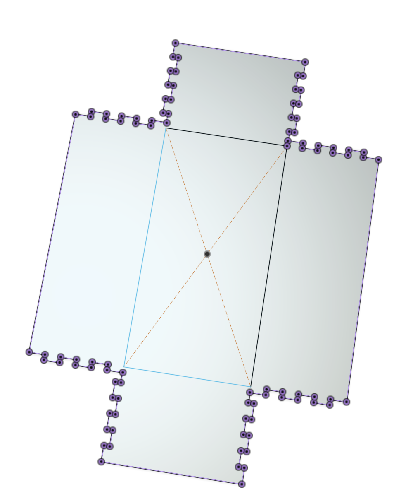
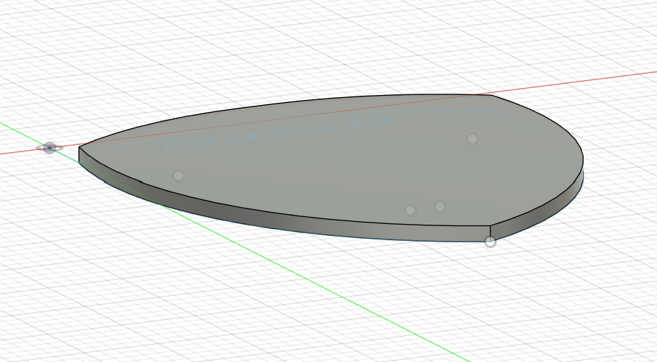
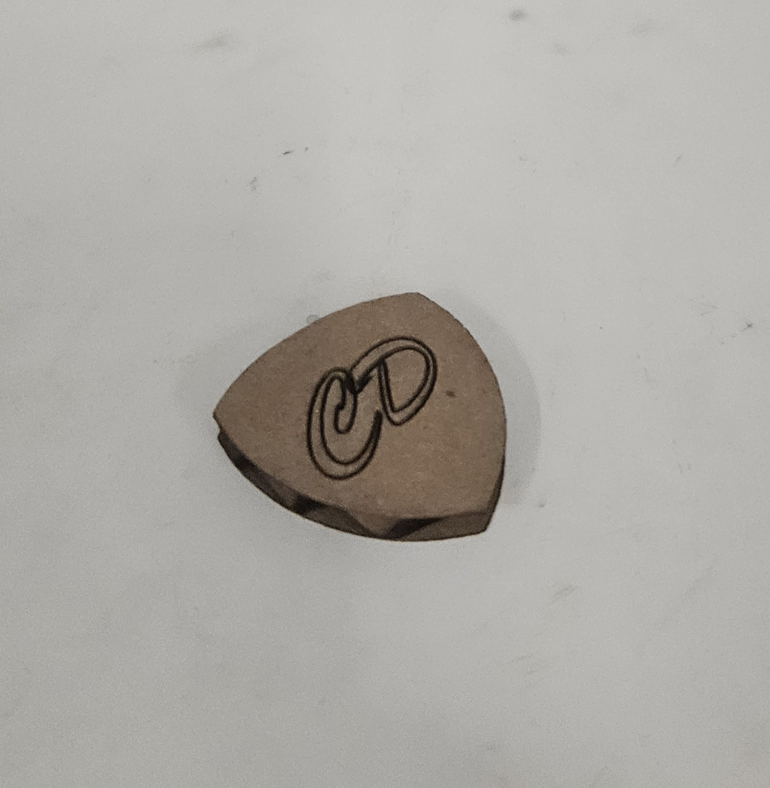
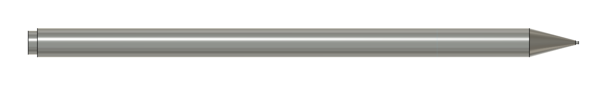
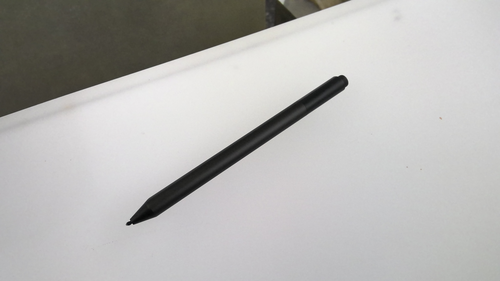
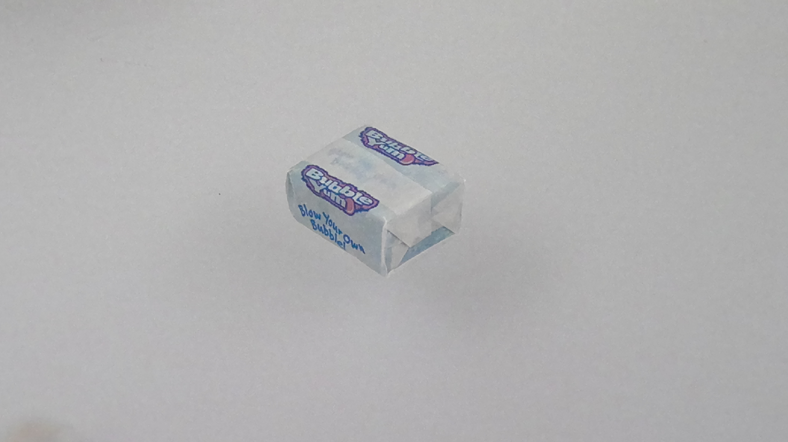
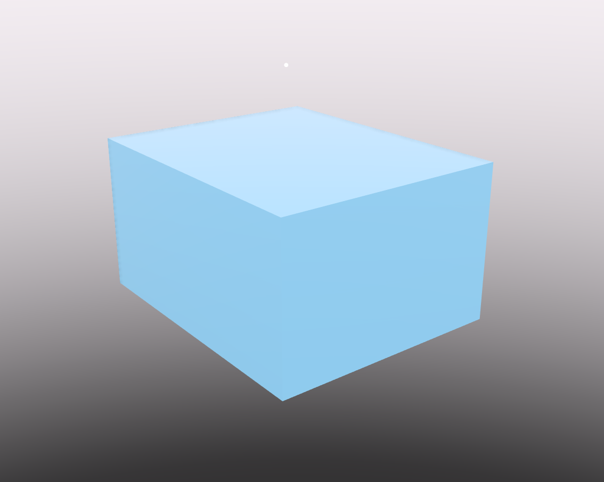

<div class="textcontainer">
<p class="margin"> </p>
<h3>Week 2: 2D Design & Cutting</h3>
<h4>Assignment 1: Make a Box</h4>
<div style="display: flex; gap: 20px; flex-wrap: wrap;">

<img src="box.jpg" alt="box.jpg" style="width: 45%; max-width: 400px;">
</div>
<h4>Assignment 2: Fusion360 Tutorial</h4>
<p>For this assignment, I watched through the following tutorial to learn more about 2D parametric lines.</p>
<iframe width="560" height="315" src="https://www.youtube.com/embed/vVFYrBClkPc?si=MfKGHCQcVj6Dh10b" title="YouTube video player" frameborder="0" allow="accelerometer; autoplay; clipboard-write; encrypted-media; gyroscope; picture-in-picture; web-share" referrerpolicy="strict-origin-when-cross-origin" allowfullscreen></iframe>
<p>After watching the video, I decided to use my new skills to create a guitar pick from scratch without a reference image. I then added my initials to it in Rhino and laser cut it out.</p>
<div style="display: flex; gap: 20px; flex-wrap: wrap;">


</div>
<p class="margin"> </p>
<div class="flexrow">
<a id="btn" href="https://a360.co/3Imqyu4" download>Download 3D Model
</a>
</div>
<p class="margin"> </p>
<h4>Assignment 3: Fusion Modeling</h4>
<div style="display: flex; justify-content: space-between; align-items: flex-start; gap: 40px; flex-wrap: wrap;">
<div style="display: flex; flex-direction: column; gap: 10px; max-width: 400px;">


</div>
<div style="max-width: 400px;">
<p>On the left is the model I made of my laptop pen
and on the bottom is the model I made of a piece of gum</p>
</div>
</div>
<div style="display: flex; gap: 20px; flex-wrap: wrap; margin-top: 20px;">


</div>
</div>